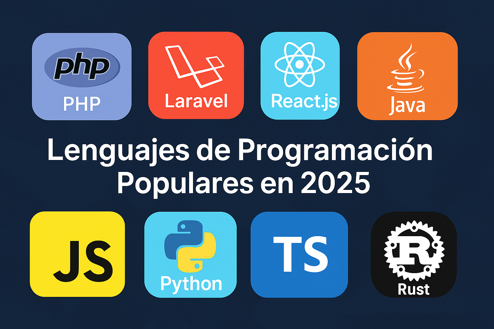
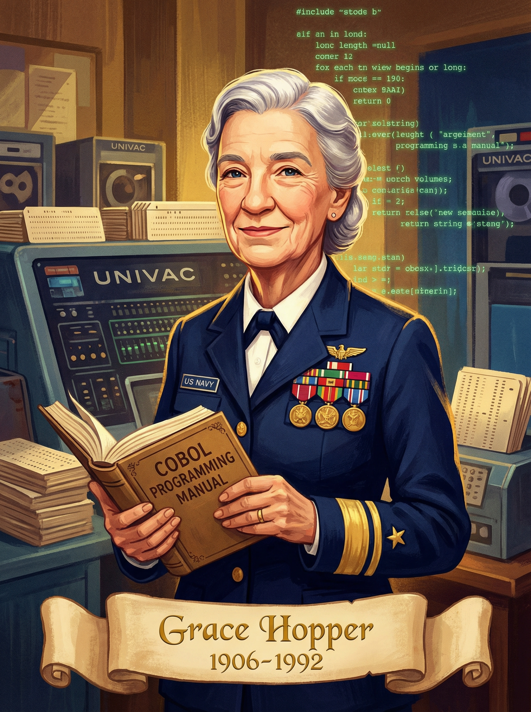
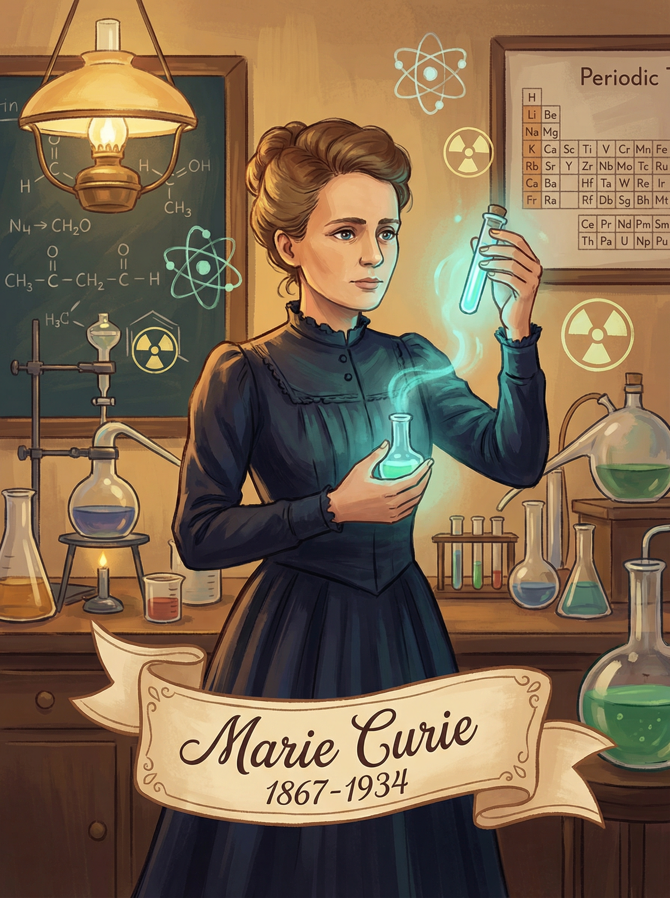
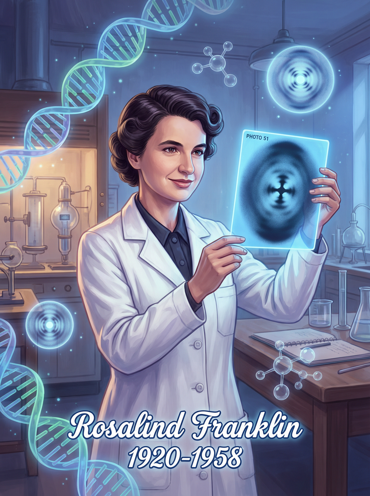

🌟 Bienvenido a mi blog de tareas
Explora las diferentes actividades planteadas en la modadlidad de de desarrollo de software
Un recurso educativo interactivo para estudiantes de grado décimo
¿Qué encontrarás aquí?
Este sitio web es una plataforma educativa diseñada para explorar cuatro temas fundamentales en la educación moderna: la contribución de las mujeres a la ciencia, la historia de la computación, la programación de software y más. Cada sección contiene información detallada, videos educativos, gráficos interactivos y recursos multimedia.
Mujeres que Cambiaron el Mundo
Conoce a algunas de las científicas más influyentes de la historia. Sus descubrimientos transformaron la ciencia, la tecnología y la medicina.
Fabian Gallego Gil
1945-Fue el rector que propuso la sala de sistemas en el año 1996 para los estudiantes del José Antonio Galán.
Sistemas & Programación
Grace Hopper
1906 – 1992Pionera en lenguajes de programación y creadora del compilador. Desarrolló COBOL, uno de los primeros lenguajes de alto nivel.
Sistemas & ComputaciónHedy Lamarr
1914 – 2000Actriz e inventora que desarrolló la tecnología de salto de frecuencia, base del WiFi, Bluetooth y GPS modernos.
Tecnología Inalámbrica
Marie Curie
1867 – 1934Primera persona en ganar dos Premios Nobel en distintas ciencias. Descubrió el polonio y el radio, y acuñó el término "radiactividad".
Física & QuímicaKatherine Johnson
1918 – 2020Matemática de la NASA cuyas cálculos de trayectorias orbitales fueron fundamentales para el éxito de las misiones espaciales Apollo.
Matemática & Astronomía
Rosalind Franklin
1920 – 1958Química y cristalógrafa cuya imagen de rayos X (Foto 51) fue clave para descubrir la estructura de doble hélice del ADN.
Bioquímica & ADNNuestras Secciones Principales
Algoritmos
Aprende qué es un algoritmo y un diagrama de flujo, con ejemplos secuenciales, condicionales, anidados y bucles.
Explorar →PHP
Aprende a programar en PHP desde cero: variables, secuenciales, condicionales (con la ecuación de segundo grado) y bucles.
Explorar →Programación de Software
Aprende sobre los fundamentos de la programación, lenguajes, paradigmas y el desarrollo de software moderno.
Explorar →Acerca de
Conoce más sobre este proyecto educativo, sus objetivos, autores y recursos disponibles para tu aprendizaje.
Explorar →Datos del Proyecto
Inspiración
"La ciencia no tiene patria, porque el conocimiento es el patrimonio de la humanidad, la antorcha que ilumina el mundo."
— Louis Pasteur
"Espero que siempre haya algunas personas locas entre nosotros, porque sin ellas no podríamos hacer ningún progreso."
— Marie Curie